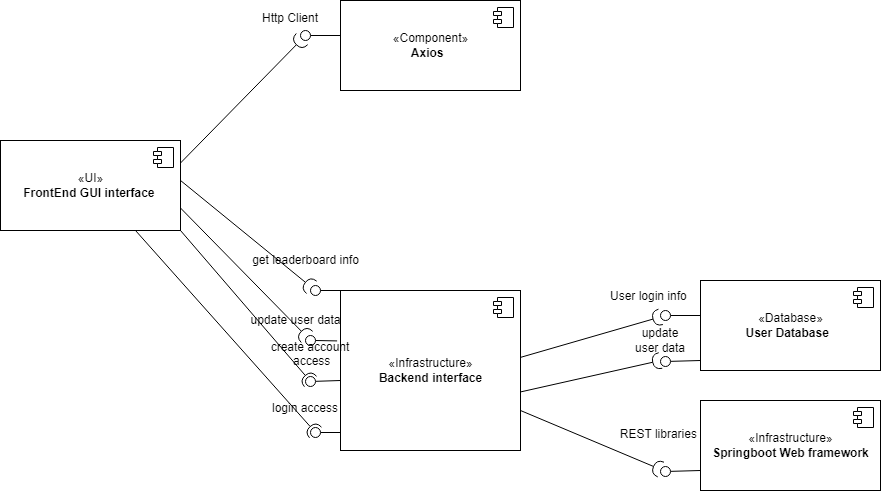

The purpose of this project is to allow users to play 24. Traditionally played with playing cards, 24 is a game where the player(s) are given four natural numbers, and must use ordinary math operations (addition, subtraction, multiplication, division) in order to make the number 24. The user will be given four numbers, and will attempt to make 24. When they are finished, then they will be given another set of four numbers, and they must, once again, make 24. They will do this as many times as they can within a given time frame. The user will then get a score based on how many they got correct; their high score will be stored with their account, and they will be able to see a leaderboard with each user’s high score ranked.
Development of the frontend product will be completed in VS code, using vanilla Javascript, HTML, and CSS as well as an open-source code algorithm. Backend development will use Java and be completed in IntelliJ. The project will be hosted using Google App Engine, and user data will be stored using Google Cloud SQL. Version control for our project will be done in GitHub, integrating smoothly with our choice of IDE’s. Project management and task tracking will utilize the ZenHub extension, and comprehensive testing for the project and its functions will be written alongside the code using JUnit tests.
Our team used an Agile software development strategy that was divided into 4 sprints. The sprint goals were Ideation & Requirements Analysis; Repository Creation, Algorithm Development, & Initial Implementation; Frontend & Backend Implementation; and Alpha Testing, Beta Testing, & Unit Testing, respectively. Each sprint was one week long and concluded with a team meeting to discuss any challenges, new directions, requirements changes, and the work that we wanted to focus on in the following sprint. The meetings were led by our project manager, Chris, and each teammate was expected to give a progress report and discuss any blockers. We maintained two different GitHub repositories for the project, one for the frontend and one for the backend. These two components were deployed as independent Google Cloud applications connected to each other via API calls.
Our primary functional requirement was for our users to be able to play the game 24. This encompasses several functional requirements, including a user's ability to log in to the web app, interact with the game and submit an answer, recieve a response as to whether they were correct, and view their previous highscore. From a system perspective, this also includes the product's ability to log a user in and out and store and retrieve each user's highscore individually.
Our application is event driven. Below is a component diagram that describes our (descriptive) architecture:

| Test Case | What functionality is being tested? | Outcome: (P)ass/(F)ail |
|---|---|---|
| 1. InitialPage | The initial page loads, indicating that the server is online and functioning | P |
Our primary goal for the UI... We have included below several images of the different pages in our product.